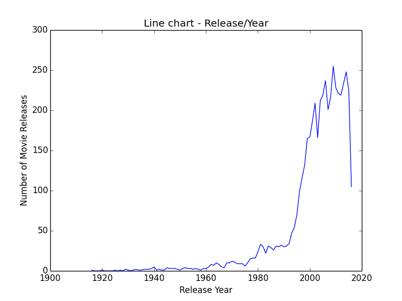
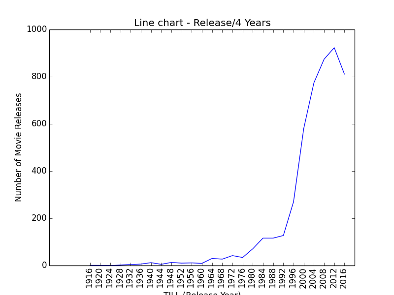
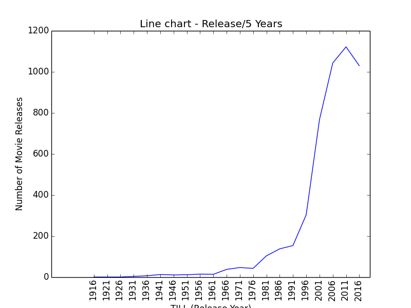
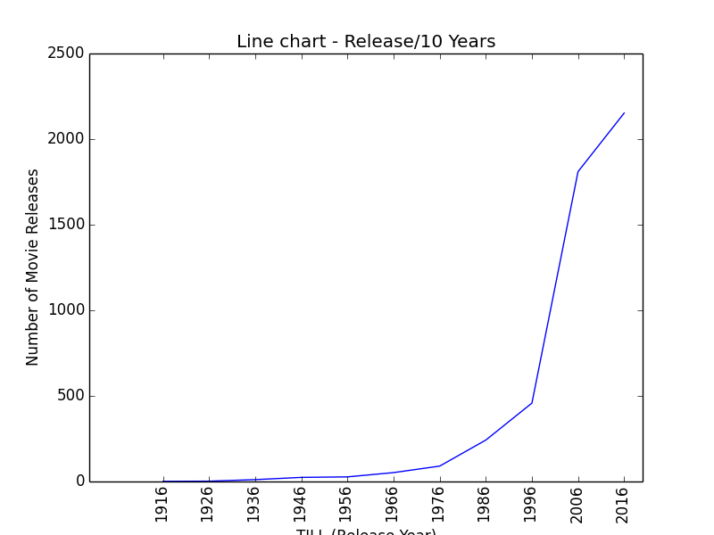
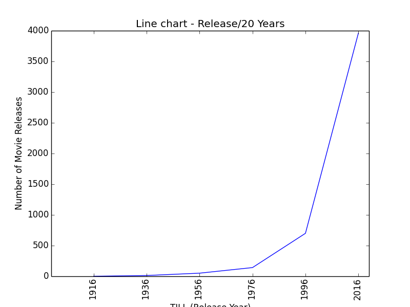
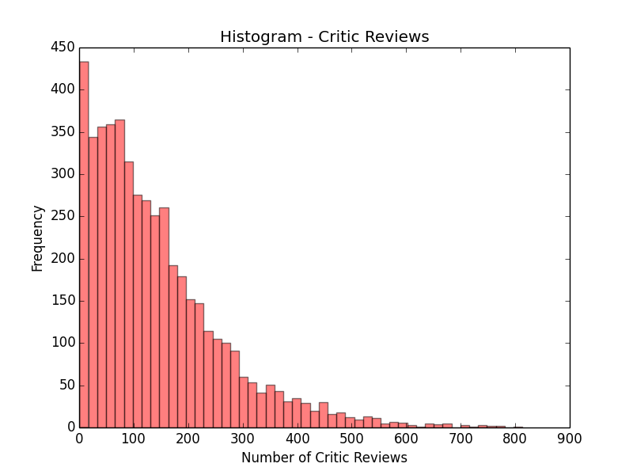
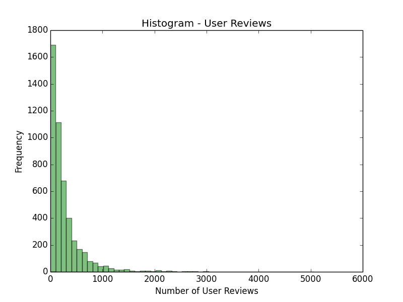
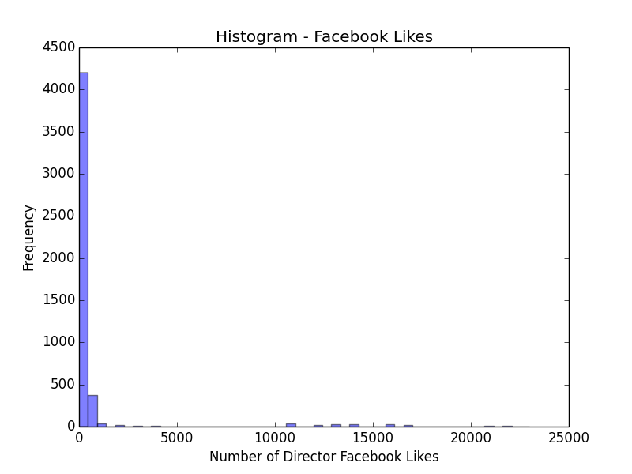

Project Summary¶
Dataset¶
The dataset used in this project is a kaggle dataset called the imdb-5000-movie-dataset. This dataset contains over 5000 records of randomly selected movies from imdb, containing 28 attributes of these records.
This project is cleaning, analysing and visualizing the dataset. The dataset is cleaned according to the required fields for analysis & visualization only.
The link to this dataset is: https://www.kaggle.com/deepmatrix/imdb-5000-movie-dataset
The dataset has just one CSV file, called ‘movie_metadata.csv’
fetchdata.py¶
The dataset already existed in a CSV file. This python code (fetchdata.py) just reads all the tuples of the CSV file, segregates it and saves the entire information in 2 new files (data-line.csv & data-hist.csv). The important cleaning of the data is being taken care by linechart.py and histogram.py
linechart.py & histogram.py¶
Input
Takes the respective CSV files as input.
1.1 Before accessing the file it checks for the existence of the CSV files
Cleaning
Selects the required columns, and cleans data accordingly. (Calling ‘clean’ function)
2.1 Selecting required information (columns) of all the rows led to buggy data in some rows. This happened because of existence of ‘,’ in the data, and the row information is being split by ‘,’ which causes the columns to shift
2.2 The column inputs of every row are checked logically, before the row is added to the clean data
2.3 This ‘clean’ function returns a list of lists and the count of the rows before cleaning.
2.4 The program displays the number of buggy rows deleted after cleaning, in both the programs.
Analysis
After this, both the files have different ways of analysing the data.
- linechart.py is cleaning for ‘director_name’, ‘genres’, ‘title_year’, ‘imdb_score’ and analysing count of movie releases from 1916 to 2016, which is the oldest and the latest year of movie releases in the data.
- histogram.py is cleaning for ‘title_year’, ‘num_critic_for_reviews’, ‘num_user_for_reviews’, ‘director_facebook_likes’ and analysing the frequency of number of critic reviews, number of user reviews and number of facebook likes for director.
Visualization
The plotting of linechart is by matplotlib.pyplot.plot and plotting of histogram is by matplotlib.pyplot.hist
Visualization Files generated by linechart.py:
linechart.png (Number of movie releases / Per Year)
linechart1.png (Number of movie releases / Per 4 Years)
linechart2.png (Number of movie releases / Per 5 Years)
linechart3.png (Number of movie releases / Per 10 Years)
linechart4.png (Number of movie releases / Per 20 Years)
Visualization Files generated by histogram.py:
histogram.png (Frequency / Number of Critic Reviews)
histogram1.png (Frequency / Number of User Reviews)
histogram2.png (Frequency / Number of Director Facebook Likes)
